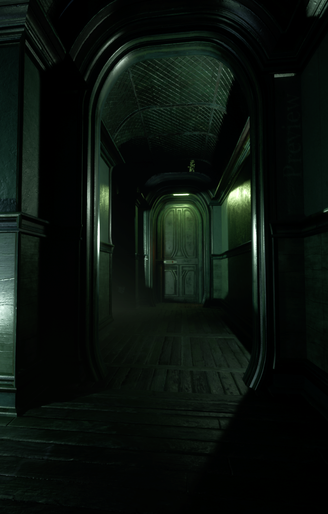

The Chapters
A colossal monument to human ambition, now a drifting tomb mapped out in distinct dread zones.

Chapter I
Forest
Ancient, overgrown paths where shadows stretch long and every rustle signals a predator closing in.

Chapter II
The Crevice
A massive structural fracture separating the habitat ring. Navigate exposed girders over a bottomless void.

Chapter III
The Main Entrance
The gaping maw of the facility. A grand threshold standing between the forgotten world and the nightmare within.

Chapter IV
Research Tower
The epicenter of the outbreak. Claustrophobic corridors choked with strange organic growths and flickering lights.